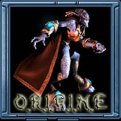
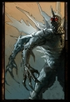

Forums galactiques > Assemblée Galactique : diplomatie officielle > Un changement dans ma vie
| Vardenfell Respect diplomatique : 77  10/01 ETU 22:49 | Score : 3 Détails Vous n'êtes qu'un dictateur ! Vous imposez au gens un vote négatif sous peine de répression !
Allez mourir ! Adieu... | ||
| Groochie Respect diplomatique : 709 10/01 ETU 22:54 | Score : 3 Détails hrp: J'ai trouvé le message de Kuny remarquable, alors j'ai voté remarquable, quoi de plus normal??
edit: Warrend, je n'est jamais dit que vous seriez faible dans la prochaine version, j'ai juste dit qu'on rigolerait bien (sa je peut te le garantir). edit 2: Dailleur se sera quoi ta raison RP?? Que je prépare un complot pour prendre le pouvoir?? | ||
| Wensicia Corrino Respect diplomatique : 1642 10/01 ETU 22:59 | Score : 6 Détails HRP : vous nous brisez les couilles, c'est RP ou c'est IRL ?
| ||
| Groochie Respect diplomatique : 709 10/01 ETU 23:06 | Score : 10 Détails Oh grand maître Warrend, je rampe tel un asticot à vos pieds dans l'espoir que du haut de votre orgueil vous m'entendiez.
Je vous présente mes plus humbles et misérables excuses, même si cela ne pourra compensé la peine que vous avez eu en voyant l'affront que j'ai commit envers vous. Je m'excuse de vous avoir insulté en votant a un message qui n'attendait que mon vote, mon geste reste inexcusable et j'en est de remords atroce. Je n'arrive même plus a dormir tellement j'ai était mauvais. En espérant que l'immensément grand Dieu Warrend acceptera mes minables excuses. | ||
| William Respect diplomatique : 772 10/01 ETU 23:10  | Score : 4 Détails [hrp] C'est quoi, cette manie de prétexter une raison RP pour attaquer les autres ? Normalement, ce sont les actions in game du personnage qui doivent s'adapter à son RP et non son RP qui doit s'adapter à ses actions in game. De plus, le RP ne doit pas être un prétexte, mais un moteur. On n'adapte pas la personnalité du perso à la situation pour faire ce qui nous arrange, on le fait évoluer avec ses hauts et ses bas.
Quant au message de Kuny, un simple 'message insultant' aurait suffit, puisqu'il semble que ce soit fait pour. Ce n'est pas HRP, mais il semblerait que ce soit suffisamment direct pour être sanctionné, à l'Assemblée Galactique, par une baisse de réputation à cause des insultes trop crues. Les menaces d'attaquer un Commandant sous prétexte que son joueur vote négatif montre bien la confusion chez certains joueurs entre RP et HRP, surtout chez certains anciens, comme je l'ai déjà dit autre part. [/hrp] | ||
| Warrend Respect diplomatique : 107 10/01 ETU 23:22 | Score : 3 Détails Petite info au passage ... mais bon faut lire la Charte pour la connaitre :
Est considérée comme un manque de respect toute insulte vulgaire directe (Role Play comme Hors Role Play), toute insulte à caractère raciste ou sexiste HRP, toute menace physique IRL. Tout joueur à qui on a manqué de respect est invité à utiliser le petit triangle « prévenir un modérateur » accessible depuis les MP ou les forums. Phrase sanctionnée : « t'es vraiment un pauvre con. Prépare-toi à morfler » (le joueur A insulte le joueur B. Manque de respect) « Commandant, vous êtes un bel enculé, si je vous chope je vous nique » (ici, les apparences sont des apparences de RP, mais le joueur A manque clairement de respect au joueur B) Ensuite pour la confusion RP - HRP, je vous dirais bien que sur le coup je vais me permettre de la faire. Ca fait déjà un moment que j'avais envie de démolir Kuny, Groochie et compagnie ... j'ai un prétexte, bancale pas forcement fair-play, vous pourrez dire ce que vous voulez ca m'intéresse pas de connaitre votre opinion sur le coup, je vous l'aurais demandé sinon. Les RP foireux j'en ai vu ... mais y a des limites et elle vient d'être largement dépassée. Maintenant faut assumer ses conneries. Pour ma part, la discussion est réellement close, j'ai posé mes conditions (quoi moi aussi j'ai le droit de me prendre pour un Roi, n'est-ce pas Kuny ...). J'assume complètement ce que j'ai dis et ce que je ferais, tant pis si ca plait pas. P.S : je crois que les Admins ont tranché ... | ||
| Groochie Respect diplomatique : 709 10/01 ETU 23:29 | Score : 0 Détails Bin quoi?? Je me suis excusé publiquement comme c'etait présisé dans vos conditions, alors maintenant c'est à vous de tenir vos conditions.
Edit: Bon les gars, toutes mes condoléances puisque MR Warrend ne veut pas accepter mes excuses. | ||
| William Respect diplomatique : 772 10/01 ETU 23:31 | Score : 1 Détails [hrp]Regarde pour de plus amples détails la discussion sur le système de votes, dans l'externe. Plus précisément, regarde l'avis qui y est donné par les admins concernant le message insultant, entre autres. S'il n'est pas utilisé à cet effet, il ne sert à rien.
Comme dit, il y a la charte au sens strict du texte et l'esprit de la charte. De toutes les façons, les admins trancheront. Et pour les RP 'foireux', le Tantrisme avait commencé comment, déjà ? Ah ouais... c'est vrai, 'pire' encore, ou davantage dans ce genre de trip, si vous préférez. Et je ne parlerai pas de tes raisons RP, comme tu n'veux rien en entendre, même si je n'en pense pas moins. [/hrp] | ||
| Bliz Respect diplomatique : 134 10/01 ETU 23:34 | Score : 1 Détails Kuny : Ce commandant est suspendu jusqu'au 13/01 ETU 23:26.
| ||
| Wensicia Corrino Respect diplomatique : 1642 10/01 ETU 23:35 | Score : 4 Détails HRP : le tantrisme un RP foireux ? A force de dire des conneries, ça déteint, non ? William, parfois, la fermer vaut mieux que tout !
| ||
| William Respect diplomatique : 772 10/01 ETU 23:42 | Score : 0 Détails [hrp]Wow ! Le joueur de Corrino, tu pourrais éviter de déverser ton venin autre part que sur mon perso ? Ce n'est plus une manie, là, c'est un fléau !
Le Tantrisme, à la base, c'était un trip qui ne volait pas plus haut que ça, pour ceux qui ont encore une mémoire. Il y a même eu une topique là-d'ssus dans la taverne où la majorité a été d'accord pour dire cela, que c'était parti de rien, d'un simple trip qui ne se voulait pas conquérant de galaxie pour un sou. J'avais bien précisé que, pour ceux qui préfèrent, c'était un RP davantage de ce type de trip (ou quelque chose du genre), donc ne prends pas la mouche quand je dis ça. [/hrp] | ||
| Wensicia Corrino Respect diplomatique : 1642 10/01 ETU 23:47 | Score : 0 Détails HRP : C'est la 3ème page de HRP, alors oui, je le dis : la coupe est pleine, trop l'ouvrir nuit au sérieux. Et les donneurs de leçons présents dans tous les topics avec des phrases toutes faites à deux leems me les brisent menu aussi. J'accepte que tu donnes des leçons sur le RP de Panu mais sur le RP des autres, il se trouve que je considérable préférable que tu gardes le silence : ça t'empêche de dire n'importe quoi. J'espère avoir été claire parce que ce soir c'est la fête du boulet avec William en "first line". Tu te considères intelligent ? Alors laisse ce topic à Kuny quand il reviendra et joue au lieu de donner des leçons.
| ||
| William Respect diplomatique : 772 10/01 ETU 23:55 | Score : 0 Détails [hrp]Tu te considères donc supérieur à moi, puisque tu t'es autorisé à donner des leçons et que, selon toi, je n'en aurais pas le droit. Soit. Tant mieux pour ton égo. Tant pis pour ton humeur : c'n'est pas pour tes considérations que j'arrêterai.
Et concernant les boulets, arrêtez de les ressortir à toutes les sauces, ça devient saoûlant, surtout quand vous arrivez à traiter ainsi des gens qui arrivent à faire du RP, 'faut l'faire, quand même (je ne parlais pas de moi, bien entendu, mais d'Alfa3, par exemple, qui a fait des progrès). 'Fin bon, c'est une mode un peu malsaine qui tend à faire fuir les nouveaux Commandants et à s'insulter à coup de croisades anti-boulets. En espérant qu'ça pass'ra ! [/hrp] | ||
| Wensicia Corrino Respect diplomatique : 1642 10/01 ETU 23:56 | Score : 0 Détails HRP : Juste la fermer, tu sais faire ?
| ||
| Ekalar Respect diplomatique : 18 11/01 ETU 01:28 | Score : 2 Détails ...
Vous êtes TOUS casse couilles sérieux... Pour des joueurs comme moi (bon ok, il m'arrive de dire des conneries plus grosses que moi aussi...) qui ne sont la que depuis quelques temps, c'est franchement relou de vous voir vous entretuer a longueur de temps sur des histoires d'avant la RAZ, pour des histoires de planètes, de sodomies avec ou sans vaseline etc etc... Sérieux vous voulez pas foutre vos différents irl, rp, hrp, ig et je ne sais quel autre abréviations encore, au placard et JOUER ??? Faut que je vous sorte la définition du dico ou vous savez tous ce que ca signifie ? Même quand vous tentez, tant bien que mal, de jouer votre rôle, vous ne pouvez vous empecher de vous foutre sur la gueule par rp interposé.... Et kuny sérieux bien que je n'ai pas tant parlé que ça, t'es un de ceux que je respecte le plus sur ce jeu, p'tetre paske sagat c'est un tueur ou parcque quand t'en a marre tu envoie tout chier, sans peur des represailles... Mais la, tu avouera que t'a deconné sérieux. C'est de la provocation gratuite. T'avais qu'a être aussi borné que certains et te monter une raison pseudo rp pour lui casser la gueule... Bref, vous saoulez, TOUS. (moi aussi, mais j'en ai rien a s'couer.) Tout ça est bien sur total hrp et écrit sur un coup de tete (nerfs ?). | ||
| Grabeuh Respect diplomatique : 1675  11/01 ETU 03:56 | Score : 5 Détails Désolé d'intervenir si tard, mais je ne peux pas me taire sur ce qui se passe. Kuny était un de mes coalisés et amis, et ce qu'il a fait me chagrine beaucoup.
Loin de moi l'idée de prendre sa défense. Pas par peur des représailles, mais parce que je trouve que ce qu'il a fait était la connerie de trop. Il a mérité ce qui lui est arrivé, on n'insulte pas quelqu'un gratuitement comme ça. En espérant que sa punition divine le fasse un peu réfléchir à ce qu'il a fait et ce qu'il n'aurait pas du faire. Bon, maintenant on va arrêter de faire les idiots, ici le joueur qui parle et non plus Grabeuh. Vous êtes où là ? En maternelle ? On peut savoir pourquoi vous vous comportez comme des gamins ? D'accord, se faire insulter, c'est jamais agréable, et les admins ont tranché. Mais ce qui m'énerve, c'est pas l'altercation Warrend/Kuny, car je donne ici raison à Warrend. Non, ce qui m'énerve, ce sont les tartines et les tartines de conneries qui suivent cette dispute ! On sait parfaitement que vous pouvez pas vous saquer, on sait que vous avez qu'une envie, c'est de vous mettre sur la gueule. Mais là, vous êtes en train de tuer l'ambiance d'Apo au point que j'hésite réellement à fermer mon compte à force de raz-le-bol. Depuis le départ des Reds, on a senti un peu plus chaque jour l'ambiance se dégrader. Et s'il y a quelque chose qui me fait de la peine, c'est bien ça. Beaucoup de peine même, car je pensais avoir à faire à des personnes intelligentes alors qu'en fait, par écran inter-posés, je suis face à des gamins. Je vous jure, ce genre d'affaires, où tout le monde s'insulte et où la seule chose qui ressort est une tension de plus en plus grande entre les joueurs, ca me donne envie de créer 4 comptes supplémentaires pour filer du triangle jaune à tout le monde ! Hého ? C'est un jeu ! J E U Et si vous continuez comme ça, la seule chose que vous allez arriver à faire, c'est dégouter tout le monde d'y jouer. Je sais vraiment pas ce qui me retient encore de partir. Peut-être est-ce des personnes comme le joueur d'Ekalar, ou celui de Rita, pour ne citer qu'eux. Des personnes qui n'ont pas oublié qu'on est seulement dans un jeu... Moi,je suis en train de me casser le cul pour rendre ce jeu plus agréable en essayant de remonter le niveau de RP, en essayant d'apporter de l'humour, de faire revenir de grands RPistes, mais je me retrouve face à l'inertie de joueurs préférant pourir l'ambiance. Alors merde ! Grandissez un peu, montrez moi que vous valez mieux que des enfants de 6 ans qui se tirent les cheveux et se filent des coups de pieds pour savoir qui aura le dernier mot. Les seules personnes que je respecte encore ici, ce sont les trois loustics qu'on a pris dans notre école, et NiCo aussi. Alors faites un effort, ne les dégoutez pas, ils méritent mieux qu'un forum où des gens s'engueule à longueur de journée. En tous les cas, j'espère ne plus avoir à dire ce genre de choses. Prouvez moi que j'ai tort, je ne demande que ça ! Et vivement le reset, ca redonnera peut-être la tête froide à certains... | ||
| Groochie Respect diplomatique : 709 11/01 ETU 08:06 | Score : -1 Détails "Vous avez subi une invasion-éclair de la part du commandant Bliz"
On reconnaît bien la les grands commandants, leurs seuls but est de gagné des points sur le dot des petits joueur comme moi. ^^ On mais je ne vous en veux pas, il faut de tout dans une galaxie, même des lâches. (je n’est toujours pas eu de raison RP à cette attaque) | ||
| Wensicia Corrino Respect diplomatique : 1642 11/01 ETU 09:00 | Score : 0 Détails Grabeuh,
J'espère que Kuny parviendra à résoudre ce problème au plus tôt. Il a malheureusement fait une petite erreur et, sous ses allures de "mauvais garçon" il a toujours su raison garder. Attendons donc le 13/01 pour son retour parmi nous. Je demanderai à lui et à Warrend de prendre du recul concernant cette affaire afin de favoriser le bon sens et le bon esprit. Kuny est parfois un peu dur dans son vocabulaire mais son humour décalé n'est pas toujours mal placé. Le soucis est que, parfois, il peut être mal perçu ! Attendons donc un peu. C'est dommage, il a été suspendu hier en plein échange de MP ... | ||
| Araskel Respect diplomatique : 396  11/01 ETU 10:04 | Score : 0 Détails hrp:moi au deut ca m'as fait rire, comme un gamin j'vous avoue, apres la suite a été des plus pitoyables...j'espere que ce post (de trop) seras le dernier d'une trop longue suite, et je rejoint Grabeuh: on est la pour s'amusé...
| ||
| Tyrian Respect diplomatique : 1334 11/01 ETU 10:16 | Score : 0 Détails HRP : Hmmmm ! Pour ce qui concerne le Rp est leur qualité je rejoins Grabeuh.
Maintenant, je vais peut-être devoir me séparer de tous mes bien, afin qu'étant totalement démuni, je puisse me permettre de provoquer et narguer, et ce en toute impunité, ceux que tout simplement je n'apprécie pas... je peux trouver des tas de raisons comme ça... Mais puiqu'on parle de RP... Qui fait véritablement du RP à part en parler ? Je les compte sur le bout des doigts d'une main . Qui fait du RP dans le but d'animer un epu cette galaxie, quitte à prednre quelques risques..Ceux la, je les compte sur les doigts d'une demi main. Alors,,svp,,,évitez de donner des leçons lorsque vous faites partie de ceux que l'on aperçoit fugitivement de temps en temps,,,juste pour critiquer les autres.. Soyez un peu plus constructifs vous -mêmes... Merci |
Forums galactiques > Assemblée Galactique : diplomatie officielle > Un changement dans ma vie